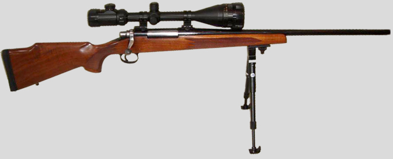
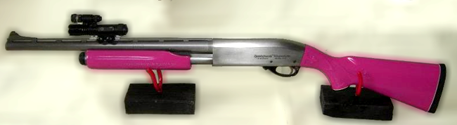
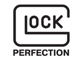
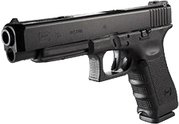

|
|
HOME | SHOP ONLINE | GUNS | LINKS |CONTACT US |
Affordable bolt action rifles
As we all know there are many good factory produced bolt action rifles sold today that will deliver satisfactory results right out of the box using factory ammo. It is our goal to take this “ satisfactory “ rifle and make it a “ Better “ rifle. The process is simple and affordable without going through the process yourself. Pick out the rifle you want and send it to us or we can order it and have it sent to our shop. When we receive the gun it is thoroughly inspected for any defects, and checked for proper operation. Most guns have minor bolt, receiver, muzzle, stock, and barrel issues that with a little TLC can be tweaked out. After assuring that it is a safe and smooth operating rifle, we will pick out and properly mount the scope of your choice based on the type of hunting or range shooting you do.
|
There are thousands of scopes on the market today ranging in price from less than a hundred dollars to well over three thousand dollars. We can help narrow this vast array of choices down to one that will not only fit your budget and style of shooting you do, and, give you years of service and reliability. The proper mounting of a scope is a process that requires the knowledge and right equipment so that the outcome is a scope that will give the results you are looking for. First, the scope mounted and laser sighted at our shop. The rifle is then taken to the range for test firing and final scope adjustments. The target with the groups are provided when you receive it. This assures you that when you take delivery of your rifle it will be ready to perform. Accessories such as slings, bipods, cases, Dura Coat finishes in your choice of colors are also available to make your rifle “YOURS”. The pricing for this process will depend on the items you choose and to fit in your budget.
Call us and we can help in the process of making these choices.
|
|  |
|
Personal Home Defense Weapons - Shotguns
The word Personal is just as important in your choice of a weapon to defend yourself, your family, and your home, as your choice of the car or truck you drive. Our choice in the protection of the three most valuable things in your life, yourself, your family, and your home is a good performing short barreled 12 Ga shotgun. There are many good factory produced pump action shotguns sold today that will deliver satisfactory results right out of the box using factory ammo. It is our goal to take this “ satisfactory “ shotgun and make it a “ Better “ shotgun. The process is simple and affordable without going through the process yourself. We can provide several choices of short barreled shotguns either in a pistol grip or standard stock to fit your needs and customize it into a weapon that not only will serve you well but be personalized to you. When we receive the gun from the manufacture it is thoroughly inspected for any defects, and checked for proper operation.
|
|  |
Most guns have minor action, receiver, muzzle, stock, and barrel issues that with a little TLC can be tweaked out. After assuring that it is a safe and smooth operating shotgun, we install a 150 Lumen tactical flashlight and red dot laser combination unit. This unit throws out a bright flood of light so that you can instantly access the danger and identify your attacker. It also produces a bright red laser dot on the “Bad Guy” so that you and he will know where the shot will be placed.
We can also take this weapon and customize it in your choice of 135 different colors of a Dura Coat finish Other additional enhancements of your choice are available. We can help narrow this vast array of choices down to one that will not only fit your budget and style, but give you years of service and reliability. The weapon is test fired and checked for proper operation and accuracy assuring you that when you take delivery of your shotgun it will be ready to perform. Accessories such as slings, cases, in your choice of colors are also available to make your weapon “YOURS”. The pricing for this process will depend on the items you choose and your budget.
Call us and we can help in the process of making these choices.
|
|

We have a complete line of Glock pistols available
at competitive prices"
We can customize your Glock with enhanced grips, barrels, slides, magazines, triggers, colors, and many other items to make it "Yours"! Call for pricing today.
|
| The GLOCK 35 Gen4, in .40, introduces revolutionary design changes to the GLOCK that dominates the Limited Class of competitive Shooting Sports worldwide. The Modular Back Strap design lets you instantly customize its grip to adapt to an individual shooter's hand size. The surface of the frame employs the new scientifically designed, real-world-tested, Gen4 rough textured technology. Internally, the new GLOCK dual recoil spring assembly substantially increases the life of the system. A reversible enlarged magazine catch, changeable in seconds, accommodates left or right-handed operators. The G35 Gen4 retains the GLOCK accessory rail for your attachments. |
|
Rick Valentine
Long Shot Arms, LLC
Dunnellon, Florida 34431
352-445-1573
We Accept
|